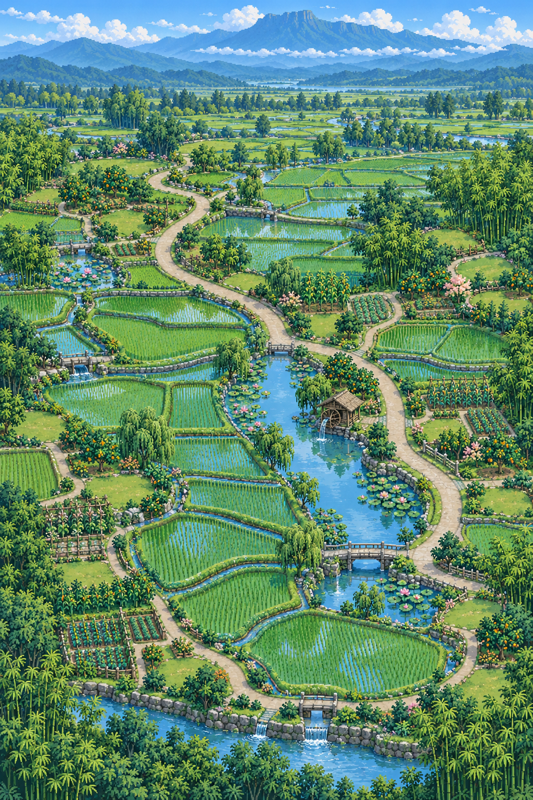

<!doctype html>
<html lang="zh-CN">
<meta charset="utf-8">
<meta name="viewport" content="width=device-width,initial-scale=1">
<title>裳泓村 · 宁静田园五风格</title>
<style>
  :root{color-scheme:dark;font-family:"PingFang SC","Microsoft YaHei",sans-serif}
  *{box-sizing:border-box}body{margin:0;background:#16231b;color:#fff5d6}
  main{width:min(96vw,900px);margin:auto;padding:18px}
  h1{margin:0 0 6px;font-size:24px}p{color:#d2c39d;line-height:1.65}
  nav{display:grid;grid-template-columns:repeat(5,1fr);gap:7px;margin:14px 0}
  button{padding:10px 4px;border:1px solid #796747;border-radius:9px;background:#272117;color:#f4e5bd;font-weight:700;cursor:pointer}
  button.on{border-color:#d9eaa2;background:#40532e;box-shadow:0 0 0 2px #d9eaa233 inset}
  figure{margin:0;border:2px solid #887348;border-radius:14px;overflow:hidden;background:#1d1a13;box-shadow:0 18px 48px #0008}
  img{display:block;width:100%;image-rendering:pixelated}
  figcaption{padding:12px 14px;color:#f0dcaa;line-height:1.6}
  .note{margin-top:12px;padding:10px 12px;border:1px solid #506b4c;border-radius:10px;background:#1c2c21;color:#c4d8b2;font-size:13px;line-height:1.6}
  @media(max-width:650px){nav{grid-template-columns:repeat(2,1fr)}nav button:last-child{grid-column:1/-1}}
</style>
<main>
  <h1>裳泓村 · 宁静田园五风格</h1>
  <p>这一轮只选择整体田园气质。房屋造型不变，选定风格后再统一放入。</p>
  <nav>
    <button class="on" data-i="0">1 稻田水渠</button>
    <button data-i="1">2 竹溪石桥</button>
    <button data-i="2">3 荷塘果园</button>
    <button data-i="3">4 麦收夏风</button>
    <button data-i="4">5 峨眉晨雾</button>
  </nav>
  <figure>
    
    <figcaption id="caption">1：翡翠水田、灌溉渠、S形主路和水车，清凉、完整、秩序最强。</figcaption>
  </figure>
  <div class="note">没有无用途空地；黄色区域仅在“麦收夏风”中表现收割后的麦茬与草垛，不是盛开的油菜花。远山统一保留峨眉山层叠剪影。</div>
</main>
<script>
const items=[
  ["风格1-稻田水渠-无房底图-v6.png","风格1 稻田水渠","1：翡翠水田、灌溉渠、S形主路和水车，清凉、完整、秩序最强。"],
  ["风格2-竹溪石桥-无房底图-v6.png","风格2 竹溪石桥","2：连续溪流、竹林、洗衣台和石桥，最幽静，川西林盘气息最浓。"],
  ["风格3-荷塘果园-无房底图-v6.png","风格3 荷塘果园","3：双荷塘、果树、柳岸和花篱，最柔和，也最适合慢生活叙事。"],
  ["风格4-麦收夏风-无房底图-v6.png","风格4 麦收夏风","4：麦收后的浅金田、稻苗、玉米、晒场和草垛，盛夏农忙感最清楚。"],
  ["风格5-峨眉晨雾-无房底图-v6.png","风格5 峨眉晨雾","5：低雾、茶田边缘、稻田、Y形路和拱桥，最诗意，峨眉山识别最强。"]
];
const preview=document.querySelector("#preview"),caption=document.querySelector("#caption");
document.querySelectorAll("button").forEach(function(button){button.onclick=function(){
  document.querySelector("button.on").classList.remove("on");button.classList.add("on");
  const item=items[Number(button.dataset.i)];preview.src=item[0];preview.alt=item[1];caption.textContent=item[2];
};});
</script>
</html>
